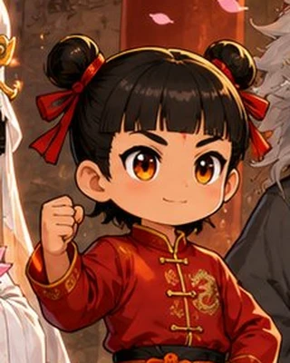
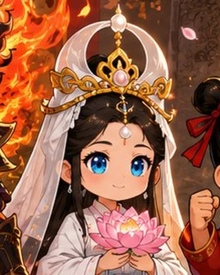
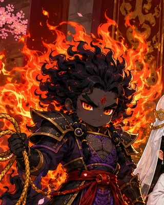
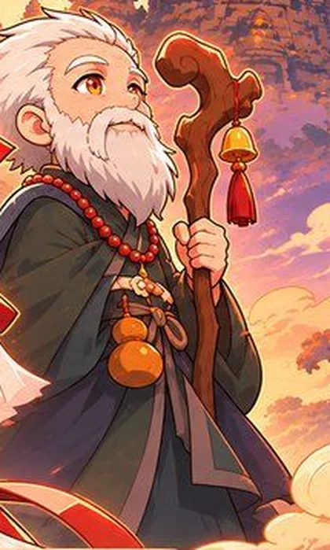
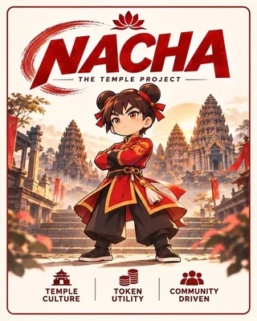
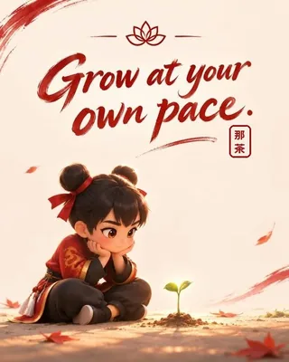

01
ナチャ
主人公・小さな守護神
Four gods

01
主人公・小さな守護神

02
みんなの声を聴くリーダー。いつも笑顔で包んでくれる。

03
護摩の炎で煩悩を焼く。怒りではなく覚悟の人。

04
鶴を連れた長寿の神様。あわてず、笑って、いいご縁を。




仕様
道具
物語
那茶（ナチャ）はカンボジアで広く信仰される守護の神様。子どもたちや旅人を見守り、悪いものを払う。
見た目は子どものようなチビ体型。でもその力はどんな敵も退ける。強さは体の大きさじゃない。
困っている人をこっそり助けて、すぐどこかへ行ってしまう。「誰がやったか」なんて気にしない。
白衣観音、不動明王、南極老人の3柱と力を合わせて、みんなの暮らしを守っている。
くわしいプロフィールは、公式の発表を待っています
ナチャの毎日は公式Xで。 フォローして、小さな守護神を見守ってください
𝕏 公式Xをフォローする